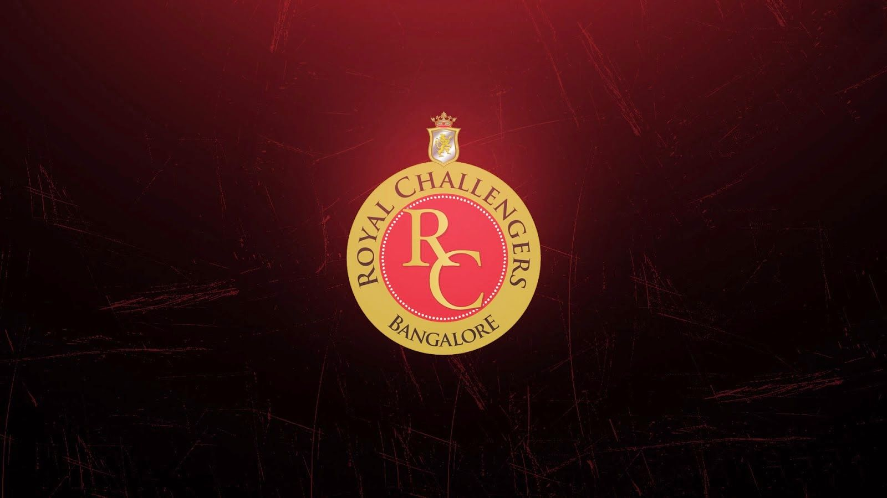
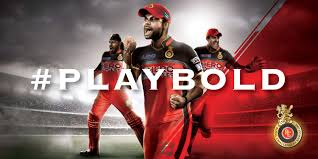
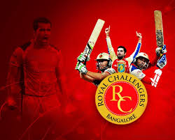
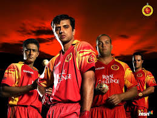

Sports In India |
Home | About | Blog | gallery | contact us |
|---|---|---|---|---|---|
|  | |||||
Royal Challengers BangaloreThe Royal Challengers Bangalore (often abbreviated as RCB) are a franchise cricket team based in Bangalore, Karnataka, that plays in the Indian Premier League (IPL). TThe Royal Challengers have never won the IPL but finished runners-up on three occasions between 2009 and 2016. Their lack of success over the years despite the presence of various notable players has earned them the tag of "underachievers."[2][3] The team holds the records of both the highest and the lowest totals in the IPL – 263/5 and 49 respectively. | |||||
|  |  |  | |||
| Copyright all Right Reserved | |||||